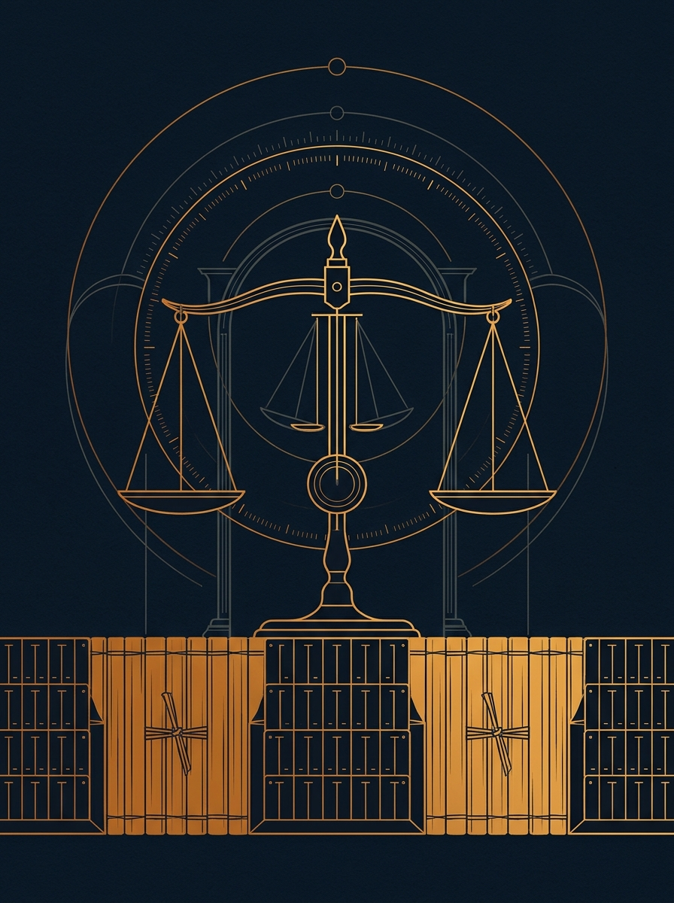

QIN HISTORY KNOWLEDGE HUB · QIN-01 · 10 MIN BRIEFING
秦漢史講義
從「周秦之變」看懂中國兩千年帝制的底層制度邏輯
秦暉以問題意識驅動的制度史，結合近二十年出土簡牘；聶輝華進一步注入經濟學「委託-代理理論」，拆解歷代王朝如何在控制成本與激勵效率間掙扎求存。
01 代理成本國家競爭本質
02 打包委託西周封建邏輯
03 直管制秦制硬體三招
04 儒表法裡軟體降本與鐘擺
原著：秦暉（清華大學歷史系）
｜
解讀：聶輝華（清華大學社科學院，28分25秒）
｜
簡牘：張家山漢簡・里耶秦簡・睡虎地秦簡

POLITICAL ECONOMY OF QIN & HAN
秦漢史講義
周秦之變與帝制底層代碼
秦暉 著 · 聶輝華 解讀
重繪典藏視覺
01 · BOOK ARCHITECTURE · 全書邏輯骨架
建議節奏 00:40–01:20
全書以「降低統治成本」為主軸，串聯難題 → 周制 → 秦制 → 儒法國家四部曲
周秦之變是政治社會體制的根本轉型，需以「代理成本」四步脈絡一體理解
02 / 15
02 · PRINCIPAL-AGENT PROBLEM · 代理成本拆解
建議節奏 01:20–02:00
統治者無法親管所有人，「代理成本」的高低取決於制度、激勵與技術三大來源
DEFINITION · 核心定義
什麼是政治中的「代理成本」？
- 直接定義：統治者為了讓代理人按自己意思辦事，不得不付出的額外代價與精力。
- 典型案例：派將軍外出打仗，防範他擁兵自重、不聽調遣所消耗的監控精力，本身就是高昂的代理成本。
- 普遍性：從古代帝國到現代組織，凡存在委託-代理關係便必定存在，區別只在於高低。
經濟學判準：制度的優劣沒有抽象標準；誰的制度能將關鍵情境下的三類「代理成本」壓到最低，誰就能在長週期競爭中勝出。
代理成本決定治理損耗，制度設計的核心任務就是對抗鏈條走樣、道德風險與資訊不對稱
03 / 15
03 · INSTITUTIONAL COMPETITION · 戰國篩選機制
建議節奏 02:00–02:40
春秋戰國持久戰將戰時代理成本推至極限，迫使國家展開三組核心制度對決
CONTEXT SHIFT · 雙時態代理壓力對比
為什麼「數百年戰國」徹底改變遊戲規則？
| 比較維度 | 和平時期 | 戰爭時期（春秋戰國常態） |
|---|---|---|
| 核心代理任務 | 徵收賦稅、維持社會基本秩序 | 農民當兵、士兵賣命、高效運糧、管治新佔領區 |
| 時間容錯度 | 相對寬裕，可逐級協調溝通 | 分秒必爭，決策鏈稍長即戰敗亡國 |
| 競爭均衡 | 熟人自治即可穩定運行 | 權力慾望無限 × 資源稀缺 → 低成本制度淘汰高成本制度 |
演化鐵律：均衡狀態下，代理成本更低的國家必然打敗代理成本更高的國家；代理成本由制度決定，故國家競爭說到底是制度的競爭。
郡縣制、軍功制、官僚制構成周秦之變的戰略勝負手
04 / 15
04 · ZHOU FEUDALISM · 概念正名與打包委託
建議節奏 02:40–03:20
秦朝是「走出封建」而非進入封建；周制以「打包委託」藉熟人社會降本
CONCEPT CORRECTION · 關鍵正名
破除教科書對「封建」的誤讀
- 流行誤說：20 世紀郭沫若提出「秦朝進入封建社會」。
- 秦暉糾偏：古語「封建」即「封邦建國」（天子封諸侯、諸侯封卿大夫）。西周才是封建社會，秦始皇功績恰是「滅封建、立郡縣」，因此秦朝是走出封建社會。
GOVERNANCE LOGIC · 分包制優勢
為何長鏈條在和平期反而好管？
- 邊界清晰：周天子不直接管每個人，而是層層打包分封。
- 熟人治理：每一包內部都是血緣宗族熟人社會，信息不對稱極低、監督成本極低，因此在和平時期運轉相當良好。
西周「打包委託」不追求跨層直管，而是容許長鏈條並在每包內實現熟人低成本監督
05 / 15
05 · ZHOU PILLARS & JINGTIAN · 四大支柱與經濟變遷
建議節奏 03:20–04:05
周制以四大倫理與選拔支柱及宗族公地維繫，卻在鐵器牛耕普及後鬆動
01 · 社會單元
小共同體本位
- 基本單元是血緣宗族。
- 辛俞堅持追隨欒氏家族，即便違背晉國國君命令亦無人指責。
- 只需忠於「直接委託人」，無須跨層負責。
02 · 倫理排序
孝高於忠
- 「為父絕君，不為君絕父」，強調從道不從君。
- 伍子胥為父鞭屍楚平王是義舉；屈原愚忠楚王反是周制異類。
- 後世改推屈原，重塑為「忠任何君主」。
03 · 契約精神
權責對應
- 「君君臣臣」是雙向約束，非單向服從。
- 孟子：「聞誅一夫紂矣，未聞弑君也」＝委託人違約，代理人可解除合同。
- 明太祖朱元璋氣得將孟子逐出孔廟。
04 · 選拔機制
鄉舉里選
- 下面推薦、上面考察的「尚德之舉」。
- 熟人社會裡誰品德好、能力強皆知情，信息不對稱極低。
- 靠口碑與品德，非後世科舉量化考試。
周制四支柱互相咬合，而鐵器牛耕讓農戶能脫離宗族，開啟法家改造空間
06 / 15
06 · DIRECT GOVERNANCE · 五層分包 vs. 三層直管
建議節奏 04:05–04:45
秦制「取消中間層、一竿子插到底」壓縮代理鏈至三層，權力直抵廿五家之里
MYTH BUSTER · 破除歷史迷思
秦漢根本不存在「皇權不下縣」
- 常見印象：誤以為縣以下全由鄉紳自治。
- 秦漢實態（里—鄉—縣三級）：最基層的「里」僅二十五家，卻設有里正、里父老、里佐、里治中等多名官吏。
- 派出單位「亭」：劉邦曾任泗水亭長，相當於鄉裡的公安派出所所長。
MILITARIZED VILLAGE · 準軍事化管理
連基層村落都在國家控管中
- 實體管制：作為基層村落的「里」建有圍牆。
- 作息點名：每天早上出門點名、晚上回來點名，還要關大門；婦女晚上還須集體勞作，堪稱準軍事化管理。
秦制透過取消分封中間層並延伸至廿五家之里，實現了對社會人力物力的極致直管
07 / 15
07 · LEGALIST HARDWARE · 秦制三大制度支柱
建議節奏 04:45–05:25
法家打造「編戶齊民、軍功制、以吏為師」三套硬體，攻克控制、激勵與選拔難題
WEAPON 01 · 解決「控制」問題
第一招：編戶齊民
- 核心動作：把分包制變成直管制，徹底拆散周制宗族根基。
- 商鞅變法手段：規定一戶若有兩名及以上成年男子不分家立戶，賦稅大幅加重，強制分家、禁止族居。
- 制度結果：每個人直接登記國家戶籍，「編入戶籍、齊等為民」，在皇帝面前沒有身份差異，只有服從義務。
WEAPON 02 · 解決「激勵」問題
第二招：軍功制
- 核心動作：取代周制貴族世襲，殺敵有賞、按人頭計算，不論出身皆可憑軍功晉升。
- 經濟學本質：把士兵個人利益與戰爭勝負直接掛鉤——殺敵越多、賞賜越多、地位越高。
- 激勵相容：讓代理人收益與委託人目標完全對齊，是解決戰場信息不對稱與偷懶的根本機制。
WEAPON 03 · 解決「選拔」問題
第三招：以吏為師
- 選拔唯一標準：「強謹」——對上絕對服從（謹），對下敢於強硬執行（強）。
- 官吏定位：官吏不是治理者，而是皇帝在基層的傳聲筒，沒有獨立意志，只需完成君主指令。
- 攻克難題：解決逆向選擇——我不需要你聰明有主見，只需要你聽話、敢辦事。
三套硬體合圍出極致戰爭動員力，將戰時代理成本壓至列國最低
08 / 15
08 · LEGALIST AXIOM · 性惡起點與概念辨偽
建議節奏 05:25–06:05
法家起點是極端性惡論與弱民強國，「法」與「術」皆與現代法治背道而馳
LOGICAL ORIGIN · 邏輯起點
極端「人性本惡」假設
「夫以妻之近與子之親而猶不可信，則其餘無可信者矣。」
這不是修辭誇張，而是制度起點：既然連妻兒都不可信，就不能靠道德、倫理或感情維持秩序，只能靠「法、術、勢」控制。
ZERO-SUM CONCLUSION · 《商君書》
冷酷結論：「民弱國強，民強國弱」
- 將百姓控制在「吃不飽但餓不死」的狀態。
- 透過愚民、連坐、鼓勵舉報扼殺社會活力，確保皇權對人力物力的單向汲取。
- 譚嗣同沉痛概括：「二千年來之政，秦政也，皆大盜也。」
法家「法術勢」服務於君主絕對安全與汲取能力，與現代法治毫無關聯
09 / 15
09 · PEACETIME COLLAPSE · 十五年速崩的經濟學
建議節奏 06:05–06:45
秦制在和平期失去晉升出口且陷入「無盡監督成本曲線」，短短十五年崩潰
PRIMARY WITNESS 01 · 荀子入秦
被嚴刑峻法馴化出的「愚朴」
- 荀子親赴秦國觀察，記載秦民「朴」「甚畏有司而順」。
- 表面誇淳樸聽話，實則非天生淳樸，而是長期被嚴刑峻法高壓馴化、只知害怕官府而乖乖服從。
PRIMARY WITNESS 02 · 《商君書·徠民》
連秦國大臣都承認做秦民太苦
- 悖論：秦國土地遼闊、田宅有餘；三晉地狹人稠，理應民流向秦，卻不願前來。
- 秦臣自白：「秦士戚而民苦」——在秦國做讀書人很慘、做老百姓極苦，寧擠他國也不願入秦。
純秦制「硬件」可複製但平和期監督成本無止境，單靠大棒必然失速崩盤
10 / 15
10 · CONFUCIAN-LEGALIST STATE · 外儒內法雙核系統
建議節奏 06:45–07:25
秦制必須裝上儒家「軟體」降本：以「秦始皇加孔夫子」鑄成超穩定儒法國家
METAPHOR · 大棒 vs. 胡蘿蔔
為什麼光靠硬體不夠，還得裝軟體？
- 純法家大棒：打一次管一次，靠大量官僚監督百姓與彼此，成本極高。
- 加上儒家胡蘿蔔：用意識形態教化提升「執政合法性」與百姓「內心遵從性」，讓人自己願意走，監督成本驟降。
SCHOLARLY PROOF · 趙鼎新《儒法國家》
中國長期大一統的結構密碼
- 社會學家趙鼎新在《儒法國家》中論證：正是「外儒內法」（秦始皇加孔夫子）的雙核體制，讓中國在帝制時代形成長期大一統與超穩定結構。
法家硬體給與控制骨幹，儒家軟體降低服從摩擦，兩者結合方能長治久安
11 / 15
11 · IDEOLOGICAL REMIX · 儒法合流譜系與三套軟體
建議節奏 07:25–08:05
獨尊的儒術實為「甜酒澆在獨角獸上」；法・儒・道各司其職構成「法道互補」
SYSTEM 01 · 骨肉
法家：管「硬控制」
負責郡縣官僚體制、戶籍控制與刑罰威懾，是支撐大一統帝國不致分崩離析的實權骨架。
SYSTEM 02 · 表皮
儒家：管「軟包裝」
以三綱倫理重塑「忠」的含義，提供統治正當性與道德甜酒，大幅降低日常行政服從成本。
SYSTEM 03 · 潤滑劑（法道互補）
道家：管「心理調適」
老子本意是上位者無為；秦制卻將其轉化為下位「犬儒」：「在上者指鹿為馬，在下者難得糊塗。」
漢武帝後是法家管控制、儒家管包裝、道家管心理調適的三位一體「法道互補」
12 / 15
12 · HISTORICAL ANOMALIES DECODED · 三大歷史悖論驗證
建議節奏 08:05–08:45
以「儒表法裡」底層代碼，一次穿透科舉、漢唐經濟悖論與集權分權鐘擺
PHENOMENON 01 · 選官制度
科舉：儒家外衣下的法家篩選
- 表面誤解：考儒家經典，看似純粹儒家制度。
- 秦暉洞察：考的不是獨立見解，而是能否精確複述經典、按格式寫文章。
- 真實功能：一種量化測試服從性的方法——不是選有德有才者，而是選最會服從的人。
本質定位：量化考績服從度，比鄉舉里選更接近法家控制邏輯。
PHENOMENON 02 · 經濟悖論
漢朝商品經濟為何遠超唐朝？
- 反直覺史實：漢朝普遍用黃金貨幣，利率遠低於後世、借貸繁盛；唐朝反而多用綢緞，黃金退出流通。
- 制度真相：漢完整繼承秦代文法吏基層，「抑豪強」使自耕農占多數。
- 深層原因：保障「人與人之間是座孤島」的強控制體制，意外催生發達商品經濟副產品。
顛覆常識：漢代繁榮並非自由放任結果，而是秦制基層穿透力的副產品。
PHENOMENON 03 · 鐘擺效應
集權—分權的兩千年擺盪
前朝過度集權而亡 ➔ 新朝偏向分權 ➔ 代理人坐大（七王之亂）➔ 再轉回集權，在兩種成本間權衡擺盪。
集久必分，分久必集：本質是「硬體監督成本」與「控制權損失」的動態拉扯。
三組歷史異象皆源自「降低代理成本」與「儒表法裡」的制度約束
13 / 15
13 · CAUSAL SYNTHESIS · 全書論證脈絡與死結
建議節奏 08:45–09:25
完整因果鏈揭示兩千年死結：既離不開官僚，又不信任官僚；所謂平等乃奴才的平等
兩千年帝制的真實面貌，是在官僚不可免卻又不可信之間反覆擺盪
14 / 15
14 · EXECUTIVE SUMMARY & ACTION · 全書總結與團隊行動
建議節奏 09:25–10:00
掌握「周秦之變」三大洞見，以「追問制度來路 ✕ 代理診斷」指導讀史與團隊治理
KEY TAKEAWAYS · 全書精華濃縮
《秦漢史講義》必須帶走的三個核心結論
- 1. 周秦之變是結構轉型：從血緣小共同體的「打包委託（分封）」，轉向取消中間層的「直管制（郡縣官僚）」，由戰時代理成本勝出驅動。
- 2. 秦制硬體三招各有代價：編戶齊民、軍功制（激勵相容）、以吏為師（強謹）贏了戰爭，卻因性惡假設與無止境監官成本在和平期崩潰。
- 3. 儒表法裡與法道互補：法家骨肉＋儒家甜酒＋道家犬儒構築兩千年大一統，但始終鎖在「集權—分權鐘擺」的死結之中。
全書最高價值：學會追問「制度的來路」、「思想的生態位」，以及看似「理所當然」背後的「所以然」。
IMMEDIATE ACTION · 讀完這本書立刻能做的一件事
用「委託-代理四維清單」體檢團隊與制度
- ① 檢視代理鏈條：盤點組織中指令從決策層到第一線經過幾層？哪些中間層產生走樣與修飾，哪些直管反而造成上層超載？
- ② 對齊激勵相容：成員的回報機制（如軍功制）是否真與核心目標一致？還是仍在靠「強謹服從」造成逆向選擇？
- ③ 校準硬體 vs. 軟體配比：避免只靠嚴格稽核 KPI（純大棒高成本），也避免只談口號（缺硬約束失控），建立低摩擦治理共識。
下一步行動：返回首頁開啟「委託-代理四維診斷器」，填寫本週案例並同步至 Supabase 團隊共學紀錄牆。
讀史不是背年代，而是用政治經濟學透視人類組織永恆的委託-代理難題
15 / 15